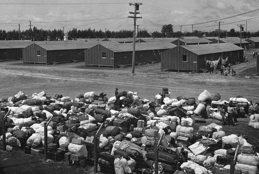

El año 1995 se llevó consigo un recuerdo reiterado de la II Guerra Mundial. Febrero y la evocación casi una primicia informativa del bombardeo de Dresde; los primeros días de mayo y la cele bración en las principales capita les europeas de actos institucionales para celebrar el final de la guerra en Europa; unos meses después, en agosto, la conmemoración, de doble filo angustia y salvación-, del lanzamiento de las dos bombas atómicas sobre Hiroshima y Nagasaki y de la rendición de Japón que ponía punto final al conflicto en su es cala mundial. Pero, queda aún un cabo por atar. La Declaración Universal de Derechos Huma nos, el recuerdo de cuya aprobación nos salió al paso un año más el pasado diciembre, está íntima mente ligada, tal vez con exceso, a esa II Guerra Mundial. Una cadena de tomas de posición en favor de los derechos humanos había ido jalonando los años mismos del conflicto: proclamación de las cuatro libertades por F. D. Roosevelt, el 1 de enero de 1941; Carta del Atlántico, del 14 de agosto de ese mismo año suscrita en enero de 1942 por los 26 países entonces en el bando aliado; Conferencia de Ministros de Asuntos Exteriores de los que ya se denominan Cuatro Grandes, en Moscú, en octubre de 1943; reunión preparatoria de las Naciones Unidas en Dumbarton Oaks en agosto-octubre de 1945, hasta llegar a la Conferencia de San Francisco de abril-junio del mismo año de la que emana un documento fundamental, la Carta de las Naciones Unidas, en la que nada menos que en seis ocasiones se alude expresamente a los derechos humanos.  Sería la niña de sus ojos. Alguien ha definido a las Naciones Unidas, con todas sus limitaciones, como el gran órgano de creciente cumplimiento de los derechos humanos. Tenía que ser así. El año 1945 suponía, sin lugar a duda, uno de esos hitos, mayores de la historia universal que obliga a la humanidad a pensar sobre las bases últimas de su existencia. Y el centro de esa reflexión fue una conciencia especialmente aguda dé. los derechos humanos y libertades fundamentales de la persona. A su violación y olvido se debía, en la óptica de los vencedores, la teragedia que la humanidad acababa de vivir y su aceptación como base última de la sociedad sería la mejor garantía para iniciar una larga y, por qué no, definitiva era (le paz universal. Tal conexión entre la recién sufrida II Guerra Mundial y la Declaración que como consecuencia del mandato de la Carta comenzó a elaborarse de forma inmediata hubo de dejar clara huella en el texto. Un simple repaso al mismo y todavía más a los debates de la Comisión que lo elaboró dan fe de ello. Ya en el mismo preámbulo se nos dice, como justificación de la Declaración que "el desconocimiento y él menosprecio de los derechos humanos ha originado actos de barbarie ultrajantes para la conciencia. de la humani dad...". Clara alusión a los crímenes nazis, al genocidio judío, que apenas sí se habían filtrado durante los años mismos de guerra y habían saltado a la publicidad desde los primeros meses de 1945. Con cierto énfasis, que hoy a la vista de abusos muy posteriores y recientes nos puede parecer ingenuo, intervendrá su principal ponente René Cassin al tratar del derecho a la vida contenido en el artículo 3, afirmando que si este derechó fundamental hubiera estado en la conciencia de la humamidad en 1933 se hubieran podido detener los múltiples atentados contra la vida cometidos por Hitler. El artículo 4, por el que se condena la esclavitud, es una nueva ocasión para aludir a uno de los episodios más tristes de la II Guerra Mundial. El rechazo a una esclavitud, llamémosla así tradicional, ya había sido enunciado por la Declaración elabora da desde Francia con ocasión de la revolución de 1848. Pero en los años. recientes, como hizo notar la delegada polaca Kalinowska, se habían introducido formas nuevas de esclavitud, los campos de concentración en los que han muerto centenares de miles de personas. Con el estilo preciso e intencionado a la vez, propio de un texto de esta índole, se añadirá un matiz- "Queda prohibida la esclavitud, bajo todas sus fomas". No es preciso que nos prolonguemos aportando nuevos ejemplos. Es indudable que tal dependencia entre la II Guerra Mundial y los derechos humanos emanados de ella, engrandecen a aquélla, pero relativizan el contenido de estos últimos. El mundo ha cambiado profundamente y en sus násmas bases en estos últímos 50 años. Conscientes de ello, las mismas Naciones Unidas, en 1974, abrieron el camino en un acto institucional hacia los llamados Derechos Humanos de Tercera Generación: el derecho al desarrollo, a la conservación del medioambiente, Ahora bien; el problema, radica en que sin ellos las otras dos generaciones de derechos contenidos en la Declaración, la de los derechos civiles y políticos (los de la libertad, la igualdad ... ) y la de los derechos económicos, sociales y culturales de la Declaración expresamente titulada "Universal" (los de un salario digno, una educación obligatoria y gratuita ... ) difícilmente se sostienen. La Declaración Universal de Derechos Humanos fue conmemoración una vez más el pasado diciembre (menos en España, estuvimos ausentes de su gestación y eso pesa), pero también problema. La que fue criatura predilecta del mundo que nacía en San Francisco vive en entredicho. El cincuentenario de la II Guerra Mundial, antes de declínar, nos ha dado la pista.
Ir arriba| Volver a la página principal